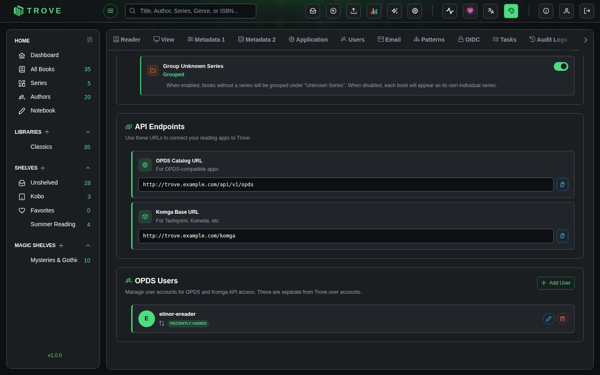

OPDS
OPDS (Open Publication Distribution System) lets you browse and download books from your Trove library using any OPDS-compatible reading app. Point your app at Trove's catalog URL, authenticate, and your full library is available on any device: e-readers, tablets, phones.
Trove also provides a Komga-compatible API for apps that speak the Komga protocol (Tachiyomi, Komelia, etc.), which is especially useful for comic/manga readers that support per-page streaming of CBX files. Both APIs share the same user accounts and respect library access permissions.
Server Control
Go to Settings › OPDS in Trove. The top section has two toggles:

OPDS Server Enabled activates the standard OPDS catalog at /api/v1/opds. This is what most reading apps connect to.
Komga API activates the Komga-compatible API at /komga/api/. Enable this if you use Tachiyomi, Komelia, or other Komga clients. It uses the same OPDS user accounts for authentication.
When the Komga API is enabled, an additional toggle appears:
- Group Unknown Series: When on, books without a series are grouped under "Unknown Series." When off, each standalone book appears as its own individual series entry. This controls how Komga clients display books that aren't part of a series.
Endpoints
Once enabled, the endpoint URLs appear in the Endpoints section with copy buttons. The URLs are auto-generated based on your Trove instance.
| Endpoint | URL Pattern | Used by |
|---|---|---|
| OPDS Catalog | http://your-server:6060/api/v1/opds | KOReader, Moon+ Reader, Panels, and other OPDS apps |
| Komga API | http://your-server:6060/komga/api | Tachiyomi, Komelia, and other Komga clients |
OPDS Users
OPDS uses its own user accounts, separate from your Trove login. Both the OPDS catalog and Komga API authenticate with these same credentials using HTTP Basic Auth.
To create a user:
- In the OPDS Users section, click Add User
- Enter a username, password, and default sort order
- Click Create
Each OPDS user is linked to the Trove user who created it, which determines library access: the OPDS user can only see libraries that the parent Trove user has access to. Admins can see everything.
Sort Order
Each OPDS user has a configurable sort order that controls how books appear in feeds. You can set it when creating the user or edit it later with the pencil icon. The options are:
| Sort Order | Description |
|---|---|
| Recently Added | Newest books first (default) |
| Title (A-Z / Z-A) | Alphabetical by title |
| Author (A-Z / Z-A) | Alphabetical by author |
| Series (A-Z / Z-A) | Alphabetical by series name |
| Rating (Low-High / High-Low) | By average rating |
Connecting a Reading App
In your reading app, add a new OPDS catalog with:
- URL: Your OPDS Catalog URL
- Username: Your OPDS username
- Password: Your OPDS password
Compatible Apps
| App | Platform | Notes |
|---|---|---|
| KOReader | Android, iOS, Linux, Windows | Also supports progress sync for books downloaded via OPDS |
| Moon+ Reader | Android | |
| FBReader | Multi-platform | |
| Panels | iOS, macOS | |
| Yomu | iOS | |
| KyBook 3 | iOS, macOS | |
| Boox | Android (e-ink devices) | |
| Tachiyomi | Android | Use the Komga API endpoint |
| Komelia | Multi-platform | Use the Komga API endpoint |
KOReader Example
- Open KOReader (with no book open)
- Tap the magnifying glass icon in the top menu
- Select OPDS catalog
- Tap the hamburger menu (top left) and select Add catalog
- Enter a name, your OPDS URL, username, and password
- Save and browse your library
Available Feeds
Most reading apps automatically discover these feeds from the root catalog URL. You don't need to enter them manually.
| Feed | Path | Description |
|---|---|---|
| Root Catalog | /api/v1/opds | Main entry point with navigation links to all feeds below |
| All Books | /api/v1/opds/catalog | Full catalog with pagination and search |
| Recently Added | /api/v1/opds/recent | Books sorted by date added |
| Libraries | /api/v1/opds/libraries | Browse by library |
| Shelves | /api/v1/opds/shelves | Browse by shelf |
| Magic Shelves | /api/v1/opds/magic-shelves | Browse dynamic magic shelves |
| Authors | /api/v1/opds/authors | Browse by author |
| Series | /api/v1/opds/series | Browse by series |
| Surprise Me | /api/v1/opds/surprise | 25 random books |
| Search | /api/v1/opds/catalog?q={terms} | Search across titles, authors, descriptions, publishers, ISBNs, series, languages, and categories |
All acquisition feeds support pagination with page (default 1) and size (default 50, max 100) query parameters.
Books include series metadata (belongs-to-collection) when available, so apps that support EPUB 3 collection grouping can display series information.
Komga-Compatible API
The Komga API exposes your library in the format that Komga clients expect. This is particularly useful for CBX files (CBZ, CBR, CB7) because Komga clients can stream individual pages without downloading the full archive.
Key endpoints:
| Endpoint | What it does |
|---|---|
GET /komga/api/v1/libraries | List libraries the user has access to |
GET /komga/api/v1/series | List series (with optional library_id filter) |
GET /komga/api/v1/books | List books |
GET /komga/api/v1/books/{id}/file | Download the full book file |
GET /komga/api/v1/books/{id}/thumbnail | Get the book cover |
GET /komga/api/v1/books/{id}/pages | Get page metadata (page count, filenames, media types) |
GET /komga/api/v1/books/{id}/pages/{num} | Get a single page image (supports ?convert=png) |
GET /komga/api/v1/collections | List collections |
Authentication is the same: HTTP Basic Auth with your OPDS user credentials.
Troubleshooting
| Problem | What to check |
|---|---|
| App can't connect | Verify the OPDS server is enabled, the URL is correct, and the OPDS credentials are right. If connecting from another device, make sure localhost is replaced with the server's IP or hostname. |
| Books not appearing | The OPDS user inherits library access from the parent Trove user. If the Trove user doesn't have access to a library, books from that library won't appear in OPDS. |
| Authentication errors | OPDS users are separate from Trove accounts. Double-check the OPDS username and password. Passwords can't be retrieved after creation. |
| Komga client shows no series | Make sure the Komga API toggle is enabled in OPDS settings. Try toggling Group Unknown Series if standalone books aren't showing up. |
| CBX pages not loading | Per-page streaming only works through the Komga API (/komga/api/), not the standard OPDS endpoint. Make sure your client is pointed at the Komga URL. |
| Search returns nothing | OPDS search queries against title, author, description, publisher, ISBN, series, language, and categories. Make sure the search terms match content in those fields. |